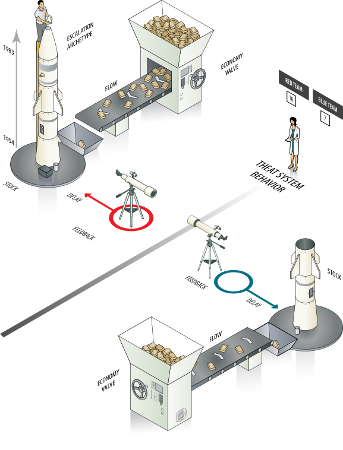
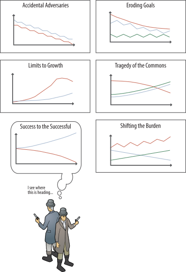

COLLECTIONS
Systems Thinking
What are they?
How many piano tuners are there in Chicago?
– Enrico Fermi
The objective of this section is to provide an overview of the key concepts of systems thinking and model building as they relate to the visual analytics process. Defining focal questions, developing a system model, understanding system behaviors and identifying potential leverage points are among the tasks which lead to developing an information model which is used for the basis of analysis.
Defining Focal Questions
In practical terms, the focal question is often shaped by the tasking given to the analyst. Imagine, for example, your task as, How Many People Can the Earth Support?; or, What effects will climate change have on the world food supply? A focal question provides a definition and orientation to the problem space of the analytical landscape. It is framed in a way that allows exploration of the system with clear purpose and reason. A focal question is simply the problem the analyst intends to solve and serves as the compass for the analysis path.
These leading questions signify the goals and serve to establish a “strategy-to-task” breakdown of the problem space.
“Deconstruct the highest level abstraction of the problem into its lower level constituent functions until you arrive at the lowest level tasks that are to be performed or subproblems that are to be dealt with.”
At the top level, the focal question reflects the decision maker’s view, priorities, and goals. At the task level, the questions reflect the view of the collection and analysis requirements. We’ll refer to these subtasks as the key analysis questions. As you work through the process, information is collected and populated to an analysis model. The analysis of the model is intended to fi nd answers to the questions posed in this problem definition process.
To help us shape our focal questions, we can draw upon the tried and tested “ Five Ws and one H” pattern. This pattern has been a golden rule for methods of inquiry for centuries.
- What? What happened?
- Who? Who is involved? Who are the main actors?
- When? When does the event take place?
- Where? Where did it take place?
- Why? Why did it happen?
- How? How did it happen?
With roots in journalism, the conventional principle underlying each question is that the answer should be factual. However, as will often be the case for analysis pursuits, an answer to a question may be generated from a hypothesis. In many cases the factual evidence available will support conclusions for some of our focal questions, leaving the remaining to be induced or deduced by analytical reasoning.
We’ll look at this in further detail in Section III, Methods of Analysis, but before getting there, we’ll use the definition of focal questions as a departure point for setting the “lens” of our analysis to the system and model. With focal questions clearly defined, we can proceed to describe the system which represents the “reality” of the subject we will analyze. The marks our first step towards the “synthesis” of the problem space.
This critical skill was highlighted in A Whole New Mind, Why Right-Brainers Will Rule the Future, where author Daniel H. Pink describes the importance:
What’s in greatest demand today isn’t analysis but synthesis–seeing the big picture, crossing boundaries, and being able to combine disparate pieces into an arresting whole.
– Pink, p.66
This “big picture” building process begins with defining the system. Pink refers to this skill as “Symphony” — a concept which is drawn from decades of evolution from a field known as Systems Thinking.
Defining a System
The 19th century thinker and theologian John Henry Newman, wrote a book called The Idea of a University. In it he said:
A truly great intellect…is one which takes a connected view of old and new, past and present, far and near, and which has an insight into the influence of all these, one on another… It possesses the knowledge, not only of things, but also of their mutual and true relations.
Newman was writing of the importance of taking a holistic system view when studying subjects of interest in the pursuit of knowledge and understanding. These tenets are the purpose of systems thinking and how looking at the world through a systems “lens” is so important. This lens has been referred to as the “macroscope” and “understandascope” illustrating how applying a macroscopic view to complex issues is paramount to the analytical process and the basis of the model activity.
Designing a system is an approach for positioning our analytical lens and bringing focus to the problem. In Thinking in Systems, (D. Meadows at al), the authors highlight the importance of the system view: Hunger, poverty, environmental degradation, economic instability, unemployment, chronic disease, drug addiction, and war, for example, persist in spite of the analytic ability and technical brilliance that have been directed toward eradicating them…That is because they are intrinsically system problems-undesirable behaviors characteristic of the system structures that produce them. They will yield us only as we…see the system as the source of its own problems…X” (page 4)
This is the point of beginning our journey, by setting the process to focus on a systems thinking approach to analysis.
The Systems Thinking Approach
With origins dating back several decades, Systems Thinking has grown to a formal field of study with widespread application. Notables such as Jay Forrester, Ludwig von Bertalanff , C. West Churchman, Russel Ackoff , Kenneth Boulding and others have paved the way for what Peter Senge described as the Fifth Discipline. In his book of the same name, Senge presented a common sense view of the approach:
A cloud masses, the sky darkens, leaves twist upward, and we know that it will rain. We also know that after the storm, the runoff will feed into groundwater miles away, and the sky will grow clear by tomorrow. All these events are distant in time and space, and yet they are all connected within the same pattern. Each has an influence on the rest, an influence that is usually hidden from view. You can only understand the system of a rainstorm by contemplating the whole, not any individual part of the pattern. – Senge
By taking a systems view of weather forecasting, Meteorologists have rather successfully tooled themselves to understand and predict the behavior of the weather system. Systems Thinking offers the analysts similar potential for understanding complex issues, as Senge writes:
Systems thinking is a discipline for seeing wholes. It is a framework for seeing interrelationships rather than things, for seeing patterns of change rather than static “snapshots.” It is a set of general principles—distilled over the course of the twentieth century, spanning fi elds as diverse as the physical and social sciences, engineering, and management.
Such a framework provides important value to the Visual Analyst and is a key concept to the analysis process. Consider this,
All around us are examples of “systemic breakdowns”—problems such as global warming, ozone depletion, the international drug trade, and the U.S. trade and budget deficits — problems that have no simple local cause.
Looking at these examples of complex issues enables you to approach problem solving as a view of “problems” as parts of an overall system. Systems thinking is a framework that is based on the belief that the component parts of a system can best be understood in the context of relationships with each other and with other systems. Systems thinking concerns an understanding of a system by examining the linkages and interactions between the elements that compose the entirety of the system.
Such an approach provides several benefits to shaping your focal questions into a “workable” problem, enabling you to understand the complex interrelationships of the system and the ramifications and tradeoffs of the actions or interventions we choose. Systems thinking attends to the connections between things, events and ideas. It gives them equal status with the things, events and ideas themselves. It is often the relationships between things, events and ideas that give them their meaning. For example, it now seems clear that climate change induced by human activity is likely to have major impacts on the planet, its environments, and its living organisms, including people. But all of these effects are so interdependent it is impossible to discover what the effects are likely to be by breaking the problem down.
The field of systems thinking has generated a broad array of tools such as causal loops, stock and flow diagrams, and systems archetypes—all of which let you depict your understanding of a system which help you to test the potential impact of your interventions. As we explore these tools, you will learn to:
- identify the parts of a system and their functions
- understand how the parts work together and affect each other
- understand how the parts together produce an effect
- how the effect, or behavior over time, persist in a variety of circumstances
Once well versed with these patterns, you will be able to increase your understanding of a particular system’s structure and behavior, communicate with others about your understandings, and design high-leverage interventions for problematic system behavior.
What is a system?
The definition of a system is based on ideas of connectedness and behavior. These concepts are better understood with an example. Consider Figure X, a conceptual illustration of an “arms race” among nations, The systems view of the arms race shows a perpetual cycle of aggression. The United States responds to a perceived Threat to Americans by increasing U.S. arms, which increases the Threat to the Soviets, which leads to more Soviet arms, which increases the Threat to the United States, which leads to more U.S. arms, which increases the Threat to the Soviets, which. . . and so on, and so on.X
Review the illustration along with the key points how connectedness and behavior are important when describing a system.

Connectedness
- A system is an assembly of components connected together in an organized way.
- The components are affected by being in the system and the behavior of the system is changed if they leave it.
- This organized assembly of components does something.
- This assembly as a whole has been identified by someone who is interested in it.
Behavior
A definition emphasizing the behaviors of systems has been given by Russell Ackoff (1981), who suggested that a system is a set of two or more elements that satisfies the following three conditions:X:
- The behavior of each element has an effect on the behavior of the whole.
- The behavior of the elements and their effects on the whole are interdependent.
- However subgroups of the elements are formed, each has an effect on the behavior of the whole and none has an independent effect on it.
Following the example, we can see from the figure the two competing nations strive to maintain more arms than the other. Each nation watches the other to determine its level of arms, but there is a delay in the receipt of that information. The information gained by a nation about the level of its competitor’s arms is used to set the goal for arms production.
Consider now the effect of an arms treaty. Take for example the Strategic Arms Reduction Treaty (START) whose effect is to increase retirement rate of arms. Consider if one nation was more industrially advanced than the other; or better off economically. By forming a system model of the situation, we can assess scenarios and possible causes and effects, and most importantly explore opportunities for intervention. The arms race example highlights several key concepts which describe the characteristics, archetypes, and behaviors of systems. We’ll look at these in closer detail.
Characteristics of a System
All systems have certain characteristics which influence their connectedness and behavior. The principal characteristics of every system are stocks, flows, valves, delays, and feedback. These characteristics are interrelated and together form the whole of a system.
Stocks are reservoirs serving as anything that increases or decreases in volume. Following the arms race example, stocks are synonymous to stockpiles. A nation will increase its stocks through arms production, or decrease due to treaty agreement or economic factors. Flows are expressed in volumes over periods of time. Flows can be money, people in cases of immigration, or information. Flow volumes raise or lower in level depending on valves. In the arms race example, a flow might be the investment of funds coming from an economy stock. Valves control flows similar to the valve of a faucet. The “turning” of the valve is described as a rate which controls the intensity of a flow. In our arms race example, the valve control is based on the goal of the nation setting the rate of production, e.g. how many arms to produce to meet the objective, and the rate of investment related to defense spending.
Delays result from variations in the speed of circulation of the flows often due to “friction” between elements of the system. Delays have an important role in the behavioral phenomena of the system, where in the case of the arms race example, a delay is a result between the feedback and flow of arms production. The delay is experienced from the time between receiving the feedback that arms production is needed and the time it takes to produce the given quantity.
Feedback loops effect the behavior of a system through integrating the effects of stocks, delays, valves, and flows and the return of information about the status of a process. For example, when a nation observes that it is losing the arms race, a feedback loop triggers action in the system. Feedback loops are common for monitoring and evaluation where the knowledge of information will result in a response or action.
These characteristics are present in virtually all systems and are key to understanding how systems work. Not only are these elements present in systems, the manner of how they work together is often based certain social and natural behaviors.
System Archetypes
System archetypes are “common stories” of behaviors which appear as recurring themes. Think of an archetype as a storyline that you sense you’ve seen or heard before - a common plot to the occurrences of all systems. System archetypes are useful for gaining insight into the “nature” of the underlying problem and for offering a basic structure or foundation upon which a model can be further developed, constructed, and understood. As Senge notes,
One of the most important, and potentially most empowering, insights to come from the young field of systems thinking is that certain patterns of structures recur again and again. These “systems archtetypes” or “generic structures” embody the key to learning to see structures…”
– Senge
This key is found in the idea that understanding system archetypes enables us to recognize potential patterns so as to be more able to see structures at play, and to see the leverage in those structures. That idea being that if we can tune our attention to detect the emergence of a specific system archetype, it may provide opportunities for intervention.
Research has shown that a handful of archetype stories reveal patterns of behavior in systems. These archetypes are covered in extensive detail in The Fifth Discipline, Limits to Growth, and other notable worksX. For additional details and in-depth coverage, you should consult these resources; however a synopsis of each is provided to illustrate the importance of understanding the concept.
In reviewing these archetypes you will notice a behavioral theme such as if this happens, then this effect is likely. You’ll recognize the stories – I see where this is heading. For example, in the Escalation archetype, two parties compete for superiority in an arena. As one party’s actions put it ahead, the other party responds by increasing its actions. The result is a continual competition of activity on both sides. The arms race system presented earlier is a good example of this story.
Behavior of Systems

Similar to the system archetypes, Economist Kenneth Boulding, one of the founders of The Society for General Systems Theory, in his book, The World as a Total System, defined five generalized classes of systems which encompasses all other systems. These provide a means of understanding some general behavior of systems. These systems are arranged in forms of natural behaviors and societal systemsX.
Natural Behaviors
Natural behavior systems are biological in nature and reflect the phenomena of mutual competition, mutual cooperation, parasitic system, and predator system. The premise of mutual competition is that slight changes in the circumstances may lead to the extinction of one of the populations, sometimes called the “principle of competitive exclusion.” This is often described as the more of A the less of B and the more of B the less of A. In the case of mutual cooperation, it is described as the more of A, the more of B; the more of B, the more of A.(Page 56).
A parasitic system system in one which a positive influence from one element to another provides a negative influence in return to the first element. I get positive things from you and provide you a negative return in response. Essentially I subsist on you. A predator system system is where the elements are essentially dependent on each other from the perspective that the quantity of one element determines the quantity of the other element. I will feed upon you even though my existence is dependent upon your existence.
Why do I need to know this?
This question brings me back to my early days of working for Disney where the working slogan was “behavior breeds behavior”. The point was, if you smile the customer will simile – you can effect a change with your actions. This idea leads us to the opportunities for leverage and intervention. Understanding systems, archetypes and behaviors provides insight to the possibilities for making a difference. In Boulding’s words:
We see this clearly in the old story as to what would happen if we had tomorrow’s newspaper. The answer is, of course that tomorrow would not happen-it would be very different. All the people who were going to have something bad happen to them would take precautionary steps to try and prevent it from happening.
– Page, 60
In short, use of the system dynamic method always starts with the need to examine some problem. The problem is thought to be influenced by causal influence between variables within a complex system over time. The system and the variables are studied in order to map the structure that is believed to influence the problem. A simulation model is made, based on the findings. The model is then studied, and policies for how to solve the problem are tried out in the model before implemented in a real setting.
Let’s look at those opportunities and “leverage points” in closer detail.
Leverage and Intervention
Archimedes [~287-212 B.C.], emphasizing the power of the lever, boasted, “Give me a place to stand on and I can move the earth.” Of course, no lever is that strong. The most notable work of this concept was proposed by Donella Meadows in her book, Thinking in Systems: A Primer, Meadows dedicates a chapter to the subject titled Leverage Points: Places to Intervene in a System. So, how do we change the structure of systems to produce more of what we want and less of that which is undesirable? (145) The answer lies in the levers of change of a system.
Leverage is found by exploring sources of influence that cause things to change. Understanding these sources of cause and effect provide opportunity to reveal leverage points. Meadows proposed twelve leverage points to intervene in a system. These levers suggest that manipulation of the levers can influence the system. Most importantly, all levers are not equal in influence.
In 1972 she was on the MIT team that produced the global computer model “World3” for the Club of Rome and provided the basis for the book, Limits to Growth. The book reported a study of long-term global trends in population, economics and the environment. The book made headlines around the world, and began a debate about the limits of Earth’s capacity to support human economic expansion, a debate that continues to this day.
A current paradigm is “Nature is a stock of resources to be converted to human purpose”. What might happen to the lake were this collective idea changed ? A society paradigm is an idea, an unstated assumption that everyone shares, thoughts, or states of thoughts that are sources of systems. Paradigms are very hard to change, but there are no limits to paradigm change. Meadows indicates paradigms might be changed by repeatedly and consistently pointing out anomalies and failures to those with open minds.
In an article of X, Elephants and Ivory, can banning the sale of ivory help to save elephants? Should the sale of ivory be banned? Has the ban in ivory trade put a stop to elephant poaching? Most people would agree that we should all strive to save elephants from extinction. Prompted by international concern over the intensive poaching of elephants that occurred in the 1970s and 1980s, the Conference of the Parties of Convention on International Trade in Endangered Species (CITES) imposed a total ban on trade in ivory and other elephant products in October 1989.
The author describes a monitoring system to support the statistical analysis needed to assess whether there is a causal link between changes in CITES policy and changes in trends in elephant poaching and illegal trade in ivory. A finding of interest is that those countries with the greatest volume of illegal ivory trade tend to be those with unregulated (or poorly regulated) domestic ivory markets. Before President Bush’s 1989 ban, the United States was one of the largest importers of worked ivory in the world. Since the implementation of the ban, the ivory market has collapsed.
John Stossel, special “You Can’t Even Talk About It” on 20/20 May 8, 2009 - The Best Way to Save Many Endangered Species is to Eat Them.
International bans on the trade of rare animal parts (tiger organs, elephant tusks, rhino horns) have been about as successful as the international war on drugs. Why? Because wherever there is a demand strong enough, market forces overwhelm law enforcement.
This illustrates the complexity of many decision and policy making scenarios. What is the best strategy to influence a positive change in a system? Clearly the first step is to understand the system and to assess each of the lever points. Take a closer look at Figure X and ask yourself the question: what would you do? What levers would you pull to address the issue?

Exercises and practice
Knime and R practice solutions
References
The citations and data sources used for this case
- Senge, Peter M. (1990), The Fifth Discipline, Doubleday/Currency,
- Ludwig von Bertalanffy (1976 - revised) General System theory: Foundations, Development, Applications.
- Ackoff, R. Towards A System of Systems Concepts. Originally published in Management Science, Vol. 17, No. 11, July 1971
- Systems thinking and practice, The Open University. http://openlearn.open.ac.uk/mod/resource/view.php?id=183686
- Matthias Ruth, Bruce M. Hannon, Jay W. Forrester, Modeling dynamic economic systems
- Meadows, D. (2008, December). Thinking in Systems: A Primer. Chelsea Green Publishing.
- Rothenberg, J. The Nature of Modeling. Chapter for “AI, Simulation & Modeling”
- Lawrence E. Widman, Kenneth A. Loparo, and Norman R. Nielsen, editors. John Wiley & Sons, Inc., August 1989, pp. 75−92. (Reprinted as N−3027−DARPA, The RAND Corporation, November 1989.)
- Newman, J. H. (1999, September). The Idea of a University. Gateway Editions. Page 122.
- Choucri, Nazli, Goldsmith, Daniel, Madnick, Stuart E., Mistree, Dinsha, Morrison, J. Bradley and Siegel, Michael, Using System Dynamics to Model and Better Understand State Stability (July 1, 2007). MIT Sloan Research Paper No. 4661-07. Available at SSRN: http://ssrn.com/abstract=1011230
- W. May. Information extraction and integration with FLORID: The MONDIAL case study. Technical report, Universit¨at Freiburg, Institut fur Informatik, 1999. http://dbis.informatik.uni-goettingen.de/Mondial
- Sweeney, Linda, and John Sterman. “Bathtub dynamics: initial results of a systems thinking inventory.” System Dynamics Review 16 (2000): 249-286.
- National Geographic. The Big Idea: The Carbon Bathtub. December 2009. http://ngm.nationalgeographic.com/bigidea/05/carbon-bath
- Sterman, John, and Linda Sweeney. “Cloudy skies: assessing public understanding of global warming.” System Dynamics Review 18 (2002): 207-240.
- J. D. Sterman and L. Booth Sweeney (2007) Understanding Public Complacency About Climate Change: Adults’ mental models of climate change violate conservation of matter. Climatic Change, 80, 213-238.
- Forrester, Jay Wright. World dynamics . Cambridge, Mass.: Wright-Allen Press, 1971.
- Pink, Daniel H.. A whole new mind: why right-brainers will rule the future. New York: Riverhead Books, 2006.
Social System Behaviors
In contrast to the natural behaviors, Boulder describes social system behaviors as follows:
The key theme is social interaction which leads to three types: threat, exchange, and integrative. A threat system is one in which one element doesn’t do something if the other element doesn’t do something else. This is usually described in mirror images: If you do something I want you to do, then I won’t do something you don’t want me to; and You refrain from doing something that I don’t want and I will refrain from doing something that you don’t want.
What happens then depends on the actions of the threatened party, B. At least five broad classes of response can be distinguished: submission or acquiescence, defiance, flight (refugee), counterthreat (possibility leading to deterrence), and threat reduction (defense building, legal action). The arms race case discussed earlier is an example of this behavior which is particularly common in political structures and foreign policy. International trade is an example of an exchange system. Elements of the system provide goods and services to other elements in exchange for money or other goods and services. If I do something you want me to do, then I expect you will do something I want you to do. Exchange is the main instrumentality of economic life and political bargaining. In such a relationship perception and equity are very important, where satisfaction or dissatisfaction will arise.
Examples of an integrative system are endeavors where entities ban together to accomplish some common desired objective or goal. You and I do something together because of what we both want to accomplish. Or, you do something because of who you are and I am or what we both belong to.